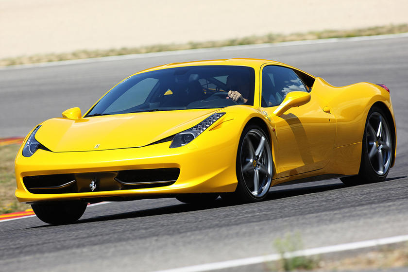
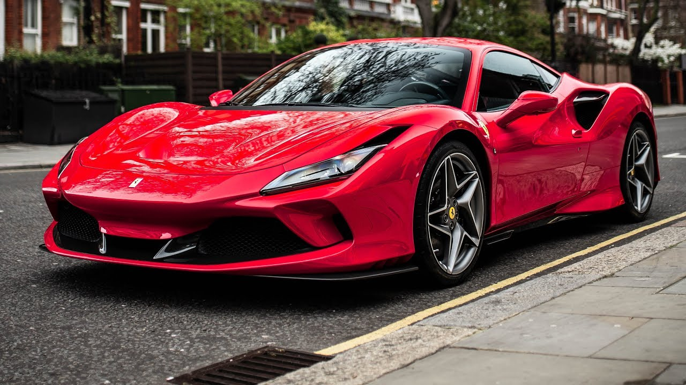

Ferrari is an Italian luxury sports car manufacturer based in Maranello, Italy. Founded by Enzo Ferrari in 1939 out of the Alfa Romeo race division as Auto Avio Costruzioni, the company built its first car in 1940, and produced its first Ferrari-badged car in 1947.
Throughout its history, the company has been noted for its continued participation in racing, especially in Formula One, where it is the oldest and most successful racing team, holding the most constructors championships and having produced the highest number of drivers' championship wins. Ferrari road cars are generally seen as a symbol of speed, luxury and wealth. Ferrari cars are built at the 165,000 square-meter (16.5-hectare) Maranello factory. In 2014 Ferrari was rated the world's most powerful brand by Brand Finance. In June 2018, a 1963 250 GTO became the most expensive car in history, setting an all-time record selling price of $70 million. As of 2021, Ferrari is the 10th-largest car manufacturer by market capitalisation, with $52.21 billion.
 Enzo Ferrari was not initially interested in the idea of producing road cars when he formed Scuderia Ferrari in 1929, with headquarters in Modena. Scuderia Ferrari literally means "Ferrari Stable" and is usually used to mean "Team Ferrari." Ferrari bought,[citation needed] prepared, and fielded Alfa Romeo racing cars for gentleman drivers, functioning as the racing division of Alfa Romeo. In 1933, Alfa Romeo withdrew its in-house racing team and Scuderia Ferrari took over as its works team: the Scuderia received Alfa's Grand Prix cars of the latest specifications and fielded many famous drivers such as Tazio Nuvolari and Achille Varzi. In 1938, Alfa Romeo brought its racing operation again in-house, forming Alfa Corse in Milan and hired Enzo Ferrari as manager of the new racing department; therefore the Scuderia Ferrari was disbanded. In September 1939, Ferrari left Alfa Romeo under the provision he would not use the Ferrari name in association with races or racing cars for at least four years. A few days later he founded Auto Avio Costruzioni, headquartered in the facilities of the old Scuderia Ferrari. The new company ostensibly produced machine tools and aircraft accessories. In 1940, Ferrari produced a race car – the Tipo 815, based on a Fiat platform. It was the first Ferrari car and debuted at the 1940 Mille Miglia, but due to World War II it saw little competition. In 1943, the Ferrari factory moved to Maranello, where it has remained ever since. The factory was bombed by the Allies and subsequently rebuilt including works for road car production. The first Ferrari-badged car was the 1947 125 S, powered by a 1.5 L V12 engine. Enzo Ferrari reluctantly built and sold his automobiles to fund Scuderia Ferrari
Throughout its history, Ferrari has supplied racing cars to other entrants, aside from its own works Scuderia Ferrari team. In the 1950s and '60s, Ferrari supplied Formula One cars to a number of private entrants and other teams. One famous example was Tony Vandervell's team, which raced the Thinwall Special modified Ferraris before building their own Vanwall cars. The North American Racing Team's entries in the final three rounds of the 1969 season were the last occasions on which a team other than Scuderia Ferrari entered a World Championship Grand Prix with a Ferrari car. Ferrari supplied cars complete with V8 engines for the A1 Grand Prix series, from the 2008–09 season.[29] The car was designed by Rory Byrne and is styled to resemble the 2004 Ferrari Formula one car.
Ferrari currently runs a customer GT program for a racing version of its 458 and has done so for the 458's predecessors, dating back to the 355 in the late 1990s. Such private teams as the American Risi Competizione and Italian AF Corse teams have been very successful with Ferrari GT racers over the years. This car, made for endurance sportscar racing to compete against such racing versions of the Audi R8, McLaren MP4-12C, and BMW Z4 (E89) has proven to be successful, but not as successful as its predecessor, the F430. The Ferrari Challenge is a one-make racing series for the Ferrari 458. The FXX is not road legal and is therefore only used for track events. In 1988, Enzo Ferrari oversaw the launch of the Ferrari F40, the last new Ferrari launched before his death later that year. In 1989, the company was renamed Ferrari S.p.A.[19] From 2002 to 2004, Ferrari produced the Enzo, their fastest model at the time, which was introduced and named in honor of the company's founder, Enzo Ferrari. It was to be called the F60, continuing on from the F40 and F50, but Ferrari was so pleased with it, they called it the Enzo instead. It was initially offered to loyal and recurring customers, each of the 399 made (minus the 400th which was donated to the Vatican for charity) had a price tag of $650,000 apiece (equivalent to £400,900). Ferrari's former CEO and Chairman, Luca di Montezemolo, resigned from the company after 23 years, who was succeeded by Amedeo Felisa and finally on 3 May 2016 Amedeo resigned and was succeeded by Sergio Marchionne, CEO and Chairman of Fiat Chrysler Automobiles, Ferrari's parent company.[21] In July 2018, Marchionne was replaced by board member Louis Camilleri as CEO and by John Elkann as chairman